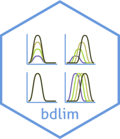

Technical details for bdlim
Source:vignettes/articles/bdlim-technical-Rmd.Rmd
bdlim-technical-Rmd.RmdIntroduction
The implementation of BDLIM in this package is slightly different than the model described in the original paper. The model has been updated based on our experiance applying the model to a variety of datasets and user feedback. I describe the model here.
Model
The BDLIM model for Gaussian regression with a continuous outcome is \[y_i = \alpha_{j_i} + \beta_{j_i}\int_\mathcal{T} x_{i}(t) \omega_{j_i}(t) dt + \mathbf{z}_i'\boldsymbol\gamma + \varepsilon_{i}.\] In this model:
- \(j_i\) denotes the group that observation \(i\) belongs to.
- \(i\) indexes individual or observation.
- \(y_i\) is a scalar response.
- \(\alpha_{j_i}\) is a fixed intercept for group \(j_i\)
- \(x_{i}(t)\) is the exposure for individual \(i\) at time \(t\) and is considered a functional predictor in this model.
- \(\omega_{j_i}(t)\) is the weight function for observations in group \(j_i\). The weight function is constrained so that \(\int_\mathcal{T} \omega_{j_i}(t) dt \ge 0\) and \(\int_\mathcal{T} [\omega_{j_i}(t)]^2 dt=1\)
- \(\mathbf{z}'\) is a vector of covariates.
- \(\boldsymbol\gamma\) is the regression coefficients for the covariates.
- \(\varepsilon_i\) is residual error for a Gaussian model and assumed to be independent normal mean 0 and variance \(\sigma^2\).